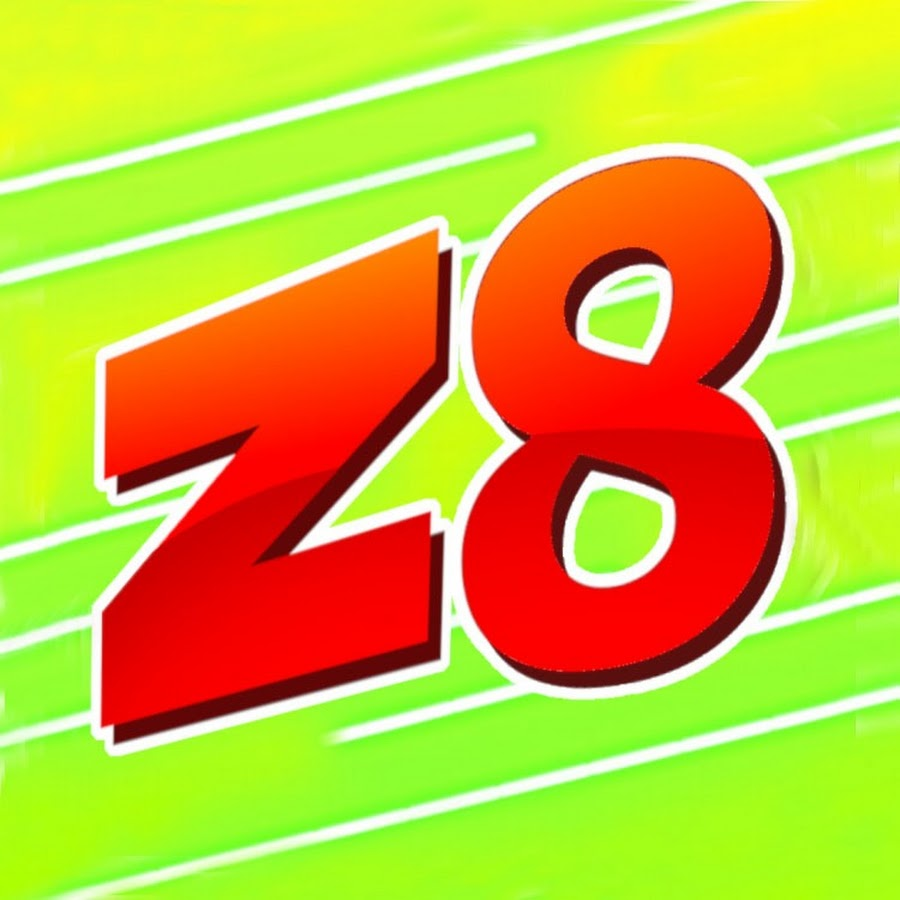

Zi8gzag
Vynikající pro vysvětlování myšlenkových pochodů při hře. Tvoří skvělá výuková videa i zábavný obsah.
Otevřít kanálJakmile zvládnete základy, otevírá se před vámi obrovský svět expertních strategií. Tyto zdroje jsou tím nejlepším místem, kde se posunout na vyšší úroveň.

Vynikající pro vysvětlování myšlenkových pochodů při hře. Tvoří skvělá výuková videa i zábavný obsah.
Otevřít kanál
Nejznámější hráč na světě. Jeho schopnosti jsou šílené. Dobré pro inspiraci a pochopení limitů lidského mozku.
Otevřít kanál
Velmi analytický GeoGuessr tvůrce zaměřený na edukativní rozbory, mapové nápovědy a praktické tipy pro hráče, kteří chtějí hlouběji porozumět metám.
Otevřít kanálAktuálně nejlepší a nejkomplexnější databáze návodů, regionálních specifik a tipů rozdělených podle jednotlivých zemí.
Pomáhá expertům učit se specifika sloupů a čar pro konkrétní regiony.
Navštívit web
Starší, ale stále užitečný web pro rychlý přehled jazyků, SPZ a kamerových odlišností Google aut.
Skvělé pro vytvoření rychlého přehledu o rozdílech mezi státy v Jižní Americe.
Navštívit webNejlepší rady se neustále mění a vyvíjejí na oficiálním GeoGuessr Discordu a Redditu /r/geoguessr.
Ideální pro hledání spoluhráčů nebo otázky na konkrétní záludná místa ze hry.
Navštívit Reddit